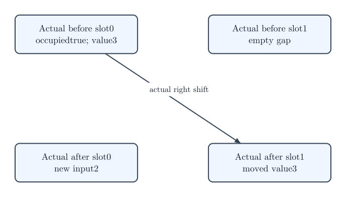
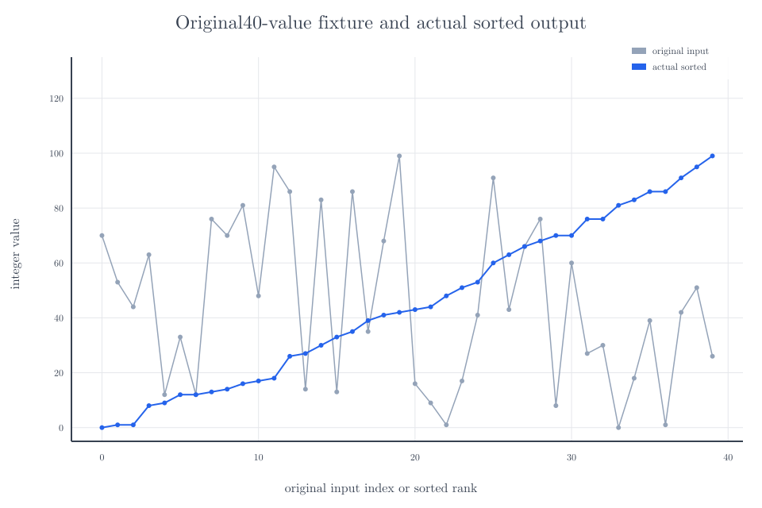
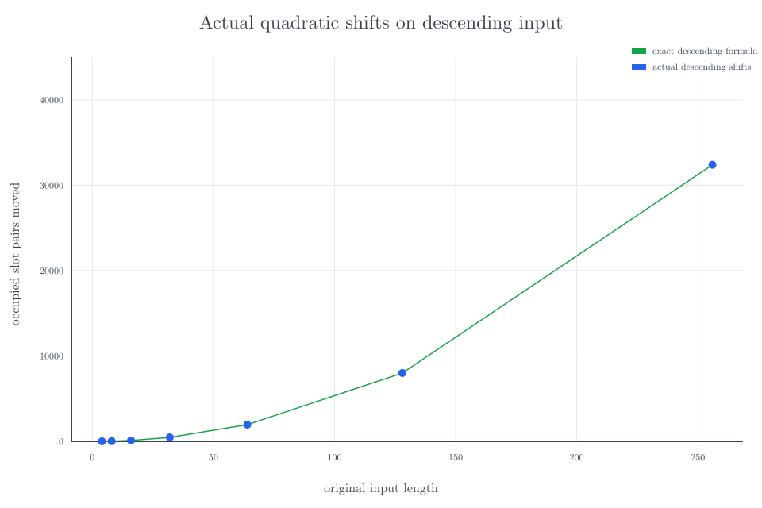
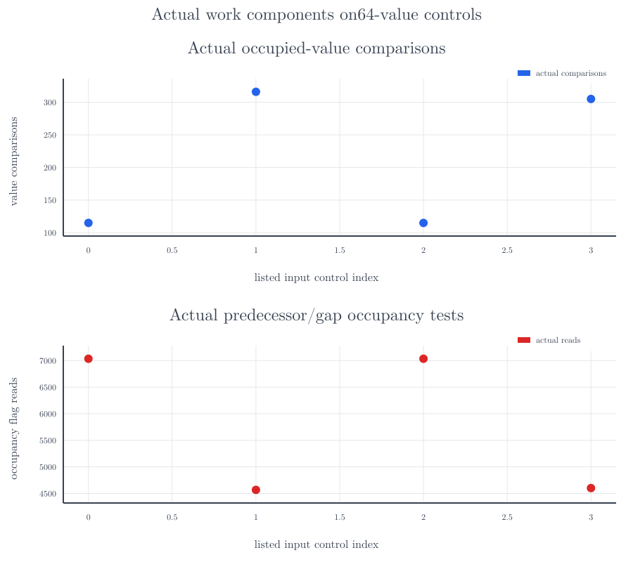

Gapped insertion in the library-sort API
Abstract
Gaps can make an insertion cheap, but their presence alone does not establish the published randomized library-sort bound. The current API uses a deterministic fixed shelf of2*n+2 slots. We inspect its actual predecessor/gap decisions and shelf snapshots, retain the original40-value fixture, and measure the descending-input quadratic shift pattern. No random arrival-order assumption or fictional rebalance history is introduced.
The implemented shelf invariant
The occupied values appear in ascending order when gaps are skipped. Place the first input at shelf midpoint n+1, then find the rightmost occupied value not exceeding the new value. Its following slot is the desired position. If empty, fill it. Otherwise find the first empty slot to its right, shift the intervening occupied run right by one, then place the new value. This preserves sorted order and the exact input multiplicities. Zero is a valid value, so occupancy is a separate flag rather than a sentinel.
The old implementation reserved2*n+2 slots from the start. Its rebalance condition2*(m+1)>capacity could never hold because m+1<=n. Its left-shift fallback was also unreachable: after k insertions the largest occupied slot is at most n+k<=2*n, leaving slot2*n+1 empty. The checked producer retains the reachable historical behavior and records only real seed, direct and right-shift placements. No randomized insertion order or geometric rebalance schedule implements the paper’s expected bound here.
A tiny actual right shift
Insert4,3,2. The first4 goes at midpoint4 of an eight-slot shelf. Then3 occupies slot0. Inserting2 targets occupied slot0, moves3 into the actual gap at slot1, and writes2 at slot0. The diagram shows just these two relevant slots before and after the real third insertion; the table prints every actual shelf slot, including the unchanged midpoint4.
#include <dm/dm.hpp>
int main() {
std::filesystem::create_directories("build");
auto t = dm::algorithms::library_sort_trace({4, 3, 2});
auto e = t.insertions.back();
auto before = t.shelves[2], after = t.shelves[3];
std::print("| actual slot | actual before occupied | actual before value, ignore if gap | actual after " "occupied | actual after value, ignore if gap |\n| ---: | --- | ---: | --- | ---: |\n");
for (std::size_t j = 0; j < before.slots.size(); ++j)
std::print("| {} | {} | {} | {} | {} |\n", j, bool(before.occupied[j]),
before.slots[j], bool(after.occupied[j]), after.slots[j]);
std::print("\nActual original input index {}; value {}; target {}; original gap {}; moved slot pairs " "{}.\n",
e.input_index, e.value, e.target, e.gap, e.moved);
dm::graphics::Diagram d;
d.node("old0", {0, 2},
std::format("Actual before slot0\noccupied{}; value{}",
bool(before.occupied[0]), before.slots[0])).node(
"old1", {6, 2}, "Actual before slot1\nempty gap").node(
"new0", {0, -2},
std::format("Actual after slot0\nnew input{}", after.slots[0])).node(
"new1", {6, -2},
std::format("Actual after slot1\nmoved value{}", after.slots[1])).edge(
"old0", "new1", "actual right shift");
d.save_svg("build/library_sort_shift.svg");
}| actual slot | actual before occupied | actual before value, ignore if gap | actual after occupied | actual after value, ignore if gap |
|---|---|---|---|---|
| 0 | true | 3 | true | 2 |
| 1 | false | 0 | true | 3 |
| 2 | false | 0 | false | 0 |
| 3 | false | 0 | false | 0 |
| 4 | true | 4 | true | 4 |
| 5 | false | 0 | false | 0 |
| 6 | false | 0 | false | 0 |
| 7 | false | 0 | false | 0 |
Actual original input index 2; value 2; target 0; original gap 1; moved slot pairs 1.

Original40-value fixture
Retain unsigned32 seed20240501, update state=1103515245*state+12345 modulo2^32 and output(state>>16)%100 for40 values. The native fixture preserves that exact order. This small deterministic LCG is a reproducible input generator, not a randomized-order guarantee. The plot retains the original input-rank versus sorted-rank comparison; selected work below comes from one actual complete sort and shelf history.
#include <dm/dm.hpp>
int main() {
std::filesystem::create_directories("build");
auto input = dm::algorithms::library_sort_demo_input();
auto t = dm::algorithms::library_sort_trace(input);
std::vector<double> x, a, b;
std::print("| original input index | actual original value | actual sorted-rank value |\n| ---: | ---: " "| ---: |\n");
for (std::size_t i = 0; i < input.size(); ++i) {
std::print("| {} | {} | {} |\n", i, input[i], t.analysis.values[i]);
x.push_back(i);
a.push_back(input[i]);
b.push_back(t.analysis.values[i]);
}
std::print("\nActual shelf capacity {}; actual search iterations {}; actual value comparisons {}; " "actual occupancy reads {}; actual shifted pairs {}; actual placements {}; actual captured " "entries {}.\n",
t.analysis.work.capacity, t.analysis.work.search_iterations,
t.analysis.work.comparisons, t.analysis.work.occupancy_reads,
t.analysis.work.shift_writes, t.analysis.work.placements,
t.captured_entries);
auto p = dm::graphics::RPlot::create();
p.line(x, a, "original input", {148, 163, 184}, 1.5).points(x, a, "",
{148, 163, 184},
3).line(
x, b, "actual sorted", {37, 99, 235}, 2).points(x, b, "", {37, 99, 235},
3).y_limits(-5, 135).title("Original40-value fixture and actual sorted output").x_label("original input index or sorted rank").y_label("integer value").save_svg("build/library_sort_original.svg");
}| original input index | actual original value | actual sorted-rank value |
|---|---|---|
| 0 | 70 | 0 |
| 1 | 53 | 1 |
| 2 | 44 | 1 |
| 3 | 63 | 8 |
| 4 | 12 | 9 |
| 5 | 33 | 12 |
| 6 | 12 | 12 |
| 7 | 76 | 13 |
| 8 | 70 | 14 |
| 9 | 81 | 16 |
| 10 | 48 | 17 |
| 11 | 95 | 18 |
| 12 | 86 | 26 |
| 13 | 14 | 27 |
| 14 | 83 | 30 |
| 15 | 13 | 33 |
| 16 | 86 | 35 |
| 17 | 35 | 39 |
| 18 | 68 | 41 |
| 19 | 99 | 42 |
| 20 | 16 | 43 |
| 21 | 9 | 44 |
| 22 | 1 | 48 |
| 23 | 17 | 51 |
| 24 | 41 | 53 |
| 25 | 91 | 60 |
| 26 | 43 | 63 |
| 27 | 66 | 66 |
| 28 | 76 | 68 |
| 29 | 8 | 70 |
| 30 | 60 | 70 |
| 31 | 27 | 76 |
| 32 | 30 | 76 |
| 33 | 0 | 81 |
| 34 | 18 | 83 |
| 35 | 39 | 86 |
| 36 | 1 | 86 |
| 37 | 42 | 91 |
| 38 | 51 | 95 |
| 39 | 26 | 99 |
Actual shelf capacity 82; actual search iterations 203; actual value comparisons 161; actual occupancy reads 1944; actual shifted pairs 230; actual placements 40; actual captured entries 6845.

A measured quadratic shift family
For strictly descending n inputs, after the midpoint seed the second value goes directly into slot0. Every subsequent smaller value shifts the occupied low-end run right. The exact number of moved slot pairs is
Ascending arrival order uses direct placements after the midpoint and moves zero slot pairs, though gap-skipping predecessor searches still perform real work. Thus neither shift count alone nor the existence of unused space gives an expected O(n log n) theorem. The next plot compares actual measured shifts with the explicitly labelled descending formula, using complete count-only native runs rather than a timing proxy or repeated-prefix history.
#include <dm/dm.hpp>
int main() {
std::filesystem::create_directories("build");
std::vector<double> x, y, reference;
std::print("| original length | actual descending moved pairs | exact descending formula | actual " "ascending moved pairs |\n| ---: | ---: | ---: | ---: |\n");
for (int n : {4, 8, 16, 32, 64, 128, 256}) {
std::vector<int> a(n);
std::iota(a.begin(), a.end(), 0);
auto ascending = dm::algorithms::library_sort_analyze(a);
std::reverse(a.begin(), a.end());
auto descending = dm::algorithms::library_sort_analyze(a);
const auto formula = std::size_t(n - 1) * (n - 2) / 2;
std::print("| {} | {} | {} | {} |\n", n, descending.work.shift_writes,
formula, ascending.work.shift_writes);
x.push_back(n);
y.push_back(descending.work.shift_writes);
reference.push_back(formula);
}
auto p = dm::graphics::RPlot::create();
p.line(x, reference, "exact descending formula", {22, 163, 74}, 1.5).points(
x, y, "actual descending shifts", {37, 99, 235}, 5).y_limits(0, 45000).title("Actual quadratic shifts on descending input").x_label("original input length").y_label("occupied slot pairs moved").save_svg("build/library_sort_quadratic.svg");
}| original length | actual descending moved pairs | exact descending formula | actual ascending moved pairs |
|---|---|---|---|
| 4 | 3 | 3 | 0 |
| 8 | 21 | 21 | 0 |
| 16 | 105 | 105 | 0 |
| 32 | 465 | 465 | 0 |
| 64 | 1953 | 1953 | 0 |
| 128 | 8001 | 8001 | 0 |
| 256 | 32385 | 32385 | 0 |

Value comparisons are only part of the work
The predecessor search skips empty flags while narrowing an index range. One occupied value comparison can therefore hide many occupancy reads. Counters separate real search iterations, value comparisons, occupancy decisions and moved slot pairs; final output scans every fixed shelf slot. These counts exclude guards, allocation/copies, capture and elapsed time. A conservative gap-scan bound is O(n^2*log(n+1)) time with O(n) runtime shelf storage, while the observed descending shift lower bound already rules out a universal O(n log n) total-work guarantee for this implementation. No tight worst-case search theorem is inferred from the four finite controls.
For64 values, compare increasing, decreasing, all-equal and the explicit LCG fixture. The panels keep value comparisons distinct from occupancy reads. All are actual counts from one complete native run per input, and no unused rebalance or left-shift events are invented.
#include <dm/dm.hpp>
int main() {
std::filesystem::create_directories("build");
std::vector<int> ascending(64);
std::iota(ascending.begin(), ascending.end(), 0);
auto descending = ascending;
std::reverse(descending.begin(), descending.end());
std::vector<std::vector<int>> inputs{ascending, descending,
std::vector<int>(64, 0),
dm::algorithms::library_sort_demo_input(64)};
std::vector<std::string> labels{"increasing", "decreasing", "all equal",
"LCG fixture"};
std::vector<double> x, comparisons, reads;
std::print("| explicit original control | actual value comparisons | actual occupancy reads | actual " "shifted pairs | actual full output slots |\n| --- | ---: | ---: | ---: | ---: |\n");
for (std::size_t i = 0; i < inputs.size(); ++i) {
auto a = dm::algorithms::library_sort_analyze(inputs[i]);
std::print("| {} | {} | {} | {} | {} |\n", labels[i],
a.work.comparisons, a.work.occupancy_reads,
a.work.shift_writes, a.work.output_slots);
x.push_back(i);
comparisons.push_back(a.work.comparisons);
reads.push_back(a.work.occupancy_reads);
}
auto p = dm::graphics::RPlot::create(), q = dm::graphics::RPlot::create();
p.points(x, comparisons, "actual comparisons", {37, 99, 235}, 6).title(
"Actual occupied-value comparisons").x_label("listed input control index").y_label("value comparisons");
q.points(x, reads, "actual reads", {220, 38, 38}, 6).title(
"Actual predecessor/gap occupancy tests").x_label(
"listed input control index").y_label("occupancy flag reads");
dm::graphics::RLayout::create(2, 1).add(p).add(q).size(900, 800).title(
"Actual work components on64-value controls").fit_panels().save_svg(
"build/library_sort_work.svg");
}| explicit original control | actual value comparisons | actual occupancy reads | actual shifted pairs | actual full output slots |
|---|---|---|---|---|
| increasing | 115 | 7035 | 0 | 130 |
| decreasing | 316 | 4568 | 1953 | 130 |
| all equal | 115 | 7035 | 0 | 130 |
| LCG fixture | 305 | 4602 | 535 | 130 |

Contracts and verification
Arbitrary int values and duplicates are valid. Empty/one-element inputs use the historical trivial-copy branch without allocating a shelf or claiming gapped placements. Complete signed predecessor,2*n+2 shelf and container geometry is checked before the algorithm. The legacy by-value API can copy its input before body guards; the analysis/trace APIs borrow input and return owned results. The guaranteed unused right tail makes a missing-right-gap internal error unreachable on admitted valid geometry.
For n>=2, exact complete trace admission counts n original values, n insertion records and(n+1)*(1+2*(2*n+2)) shelf/slot/flag records. Trivial inputs capture only their n original values. The million-record cap is checked before copies or sorting and excludes scalar fields, capacities/result/runtime copies and bytes/RAM;0 disables only the optional cap. Every actual shelf and placement is owned and comes from one producing execution.
Native tests exhaust permutations through length seven and ternary words through
length six, compare every occupied shelf with its sorted input prefix, and
verify real shifts, gaps, work counts, guards and ownership. The ten-report
batch passed 101 native CTest cases, 34 directly instrumented ASan/UBSan cases,
103 compiled/executed public examples, 515/515 scoped file definitions plus 10
exact LCG class definitions, and ten representative clangd hovers. Independent
Python integer/Fraction, explicit-label graph search, quadratic sequence DP and
full weighted-stump references passed 69430 records across all ten topics,
including a separately fitted held-out Iris model. Frozen ordinary compatibility
passed 1000 Lex-BFS orders, 1000 library sorts, 100 LBG codebooks, 100 complete
five-round LogitBoost ensembles and 200 LLL bases; corrected LBG final
labels/objectives are intentionally excluded from historical compatibility. All
4 complete programs executed and all 4 native figures were rendered and visually
reviewed, with clipped legends corrected and rerun. HTML/Markdown
computed-result and figure-byte checks gate legacy retirement. Repeatable
receipts are retained in build/mepml-conversion/batch-204-213/.
References
M. A. Bender, M. Farach-Colton and M. A. Mosteiro(2006), Insertion Sort is O(n log n), Theory of Computing Systems39(3),391–397. The name motivates the use of gaps; this historical deterministic fixed-capacity variant explicitly does not implement the paper’s randomized insertion/rebalance assumptions or inherit its guarantee.